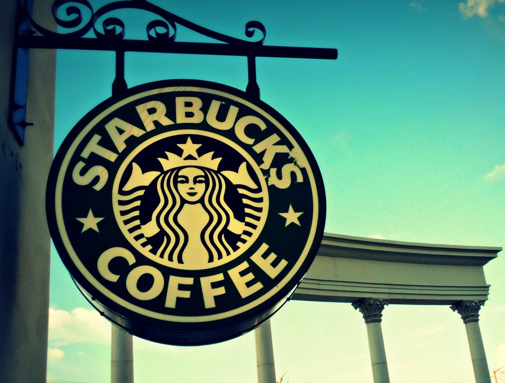
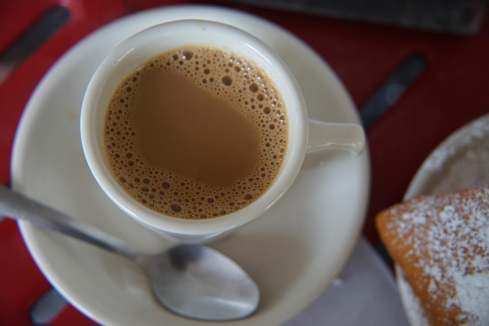
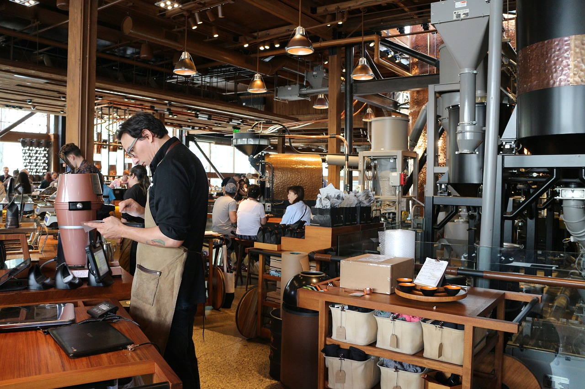

회사소개
스타벅스 코리아의 시작과 철학을 소개합니다.스타벅스 코리아는 1999년 서울 이화여대 앞 1호점을 시작으로, 커피 그 이상의 가치를 전하고자 노력해왔습니다. 고객, 파트너, 지역사회와 함께하는 문화를 통해 모두가 연결되는 공간을 만들고 있습니다.
스타벅스 코리아는 1999년 서울 이화여대 앞 1호점을 시작으로, 커피 그 이상의 가치를 전하고자 노력해왔습니다. 고객, 파트너, 지역사회와 함께하는 문화를 통해 모두가 연결되는 공간을 만들고 있습니다.


우리는 인간 정신을 고양시키는 Starbucks 경험을 제공하며, 커피 한 잔과 하나의 이웃, 하나의 매장에서 긍정적인 변화를 만들어가고자 합니다. 앞으로도 고객과 사회에 지속적인 영향을 줄 수 있는 브랜드로 성장하겠습니다.
스타벅스는 모든 결정과 행동의 중심에 '사람'을 둡니다. 고객과 파트너, 커뮤니티의 신뢰를 바탕으로 품질과 지속가능성을 추구하며, 커피 문화를 선도합니다.

스타벅스 코리아는 1999년부터 현재까지, 수많은 이정표를 세우며 성장해왔습니다. 국내 1호점 오픈부터 친환경 매장 도입까지, 스타벅스의 여정을 함께 돌아보세요.
스타벅스는 지구 환경 보호, 지역사회 기여, 파트너 복지 향상을 통해 지속가능한 미래를 실현하고자 합니다. 리유저블 컵 캠페인, 커뮤니티 스토어 등 다양한 ESG 활동을 이어가고 있습니다.